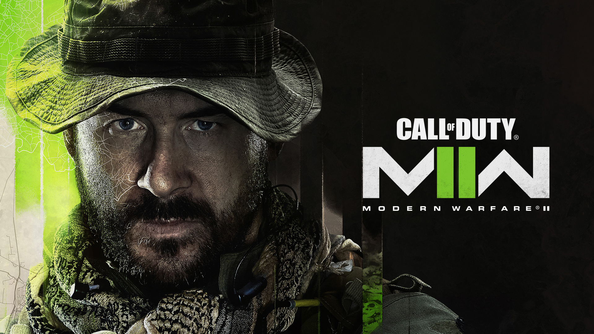
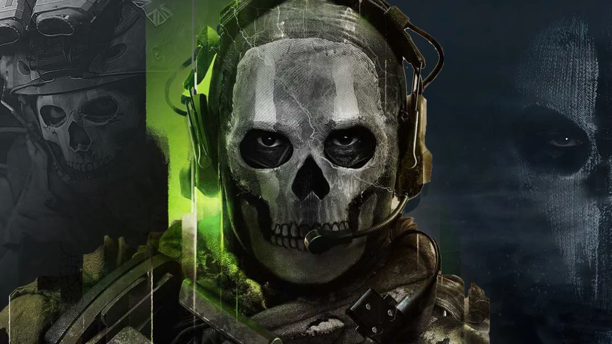
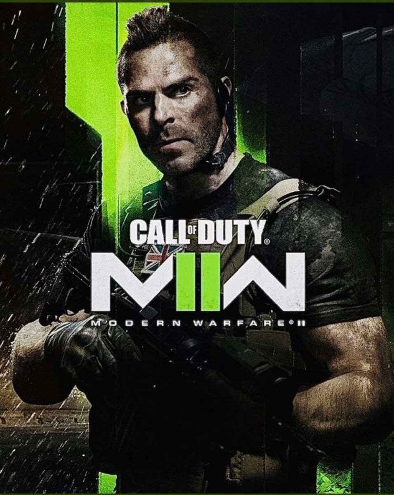
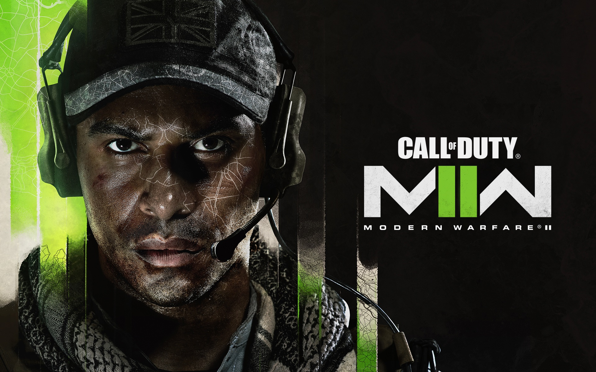
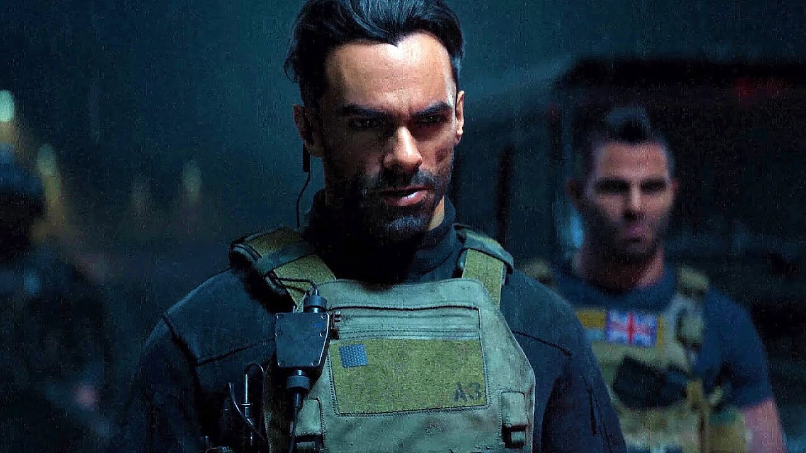

Capitán Price

El capitán John Price, apodado Bravo Seis, es un oficial del SAS que aparece en Call of Duty
4: Modern Warfare, Call of Duty: Modern Warfare 2, en Call of Duty: Modern Warfare 3, en Call of Duty: Black
Ops IIII (en el modo Blackout). Suele llevar puesto un sombrero, y el arma que más utiliza es una carabina
M4A1 modificada. Forma parte de la Fuerza Operativa 141 y del 22º regimiento del SAS. 15 años antes de Call of
Duty 4: Modern Warfare era teniente.
"GHOST" Simon Riley

El teniente Simon "Ghost" Riley era un operador británico de las fuerzas especiales de la
SAS, y un miembro destacado de la Fuerza Operativa 141 (tanto así que se le fue otorgado el puesto de segundo
al mando), conocido por su icónico pasamontañas con patrón de calavera, auriculares y gafas de sol rojo
oscuro.
Ghost aparece como personaje principal en Call of Duty: Modern Warfare 2, Modern Warfare 2: Ghost, Call of
Duty: Online, Operación Kingfish, Call of Duty: Heroes y Call of Duty: Modern Warfare 2 Remastered. También
aparece como una opción de personalización en Call of Duty: Ghosts y más tarde para la versión de reinicio de
sí mismo en Call of Duty: Warzone. También fue un personaje en Call of Duty: Mobile, y se desbloquea después
de alcanzar el Nivel 1 del Pase de batalla premium de la temporada 1.
Soap MacTavish

John "Soap" MacTavish fue el protagonista escocés de la saga Modern Warfare. Apareció en
Call of Duty 4: Modern Warfare como Sargento, sirviendo en el 22do Regimiento del SAS como francotirador,
soldado de asalto y experto en demoliciones, y en Call of Duty: Modern Warfare 2 y Call of Duty: Modern
Warfare 3 como capitán y comandante de campo de la Fuerza Operativa 141 junto con el capitán John Price, el
sargento Gary "Roach" Sanderson y el teniente Simon "Ghost" Riley bajo su mando.
Gaz

Gaz es un teniente de élite del Servicio Aéreo Especial (SAS) que aparece en Call of Duty 4: Modern Warfare y
en la introducción de Call of Duty: Modern Warfare 2.
Alejandro Vargas

El Coronel Alejandro Vargas es un personaje que aparecerá en Call of Duty: Modern Warfare II y formará parte
de la nueva Fuerza Operativa 141 formada por Price. Es interpretado por el actor americano Alain Mesa.